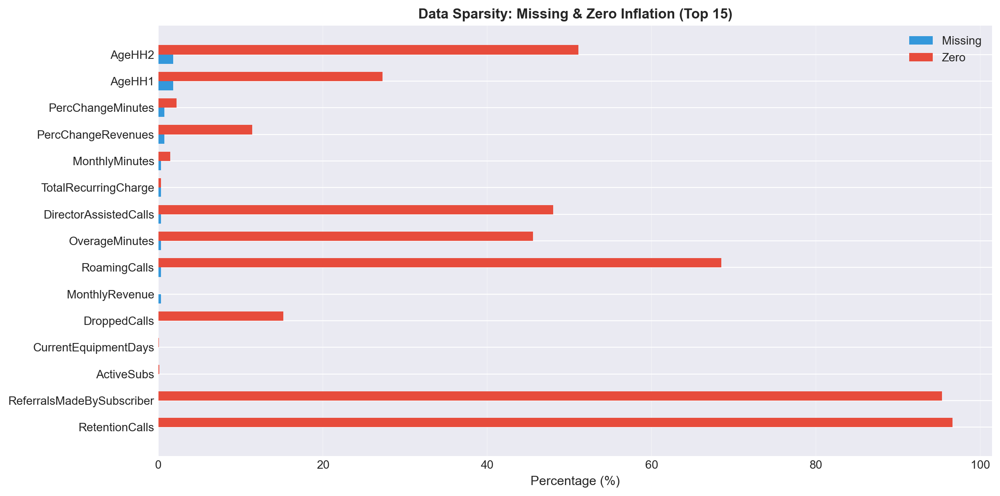
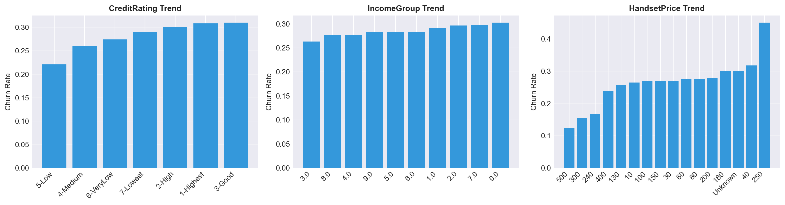
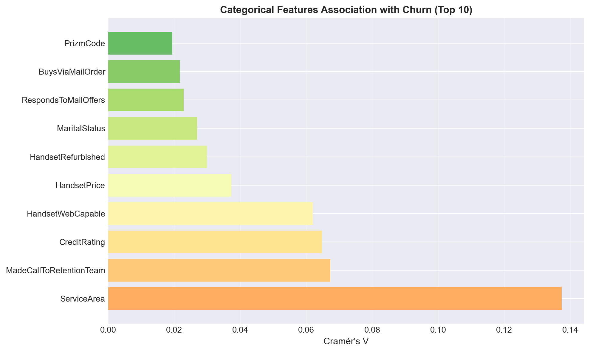

| feature | origin | semantic_group | type | transform_encoding | keep_glm | keep_tree | keep_nn | decision_type_short | |
|---|---|---|---|---|---|---|---|---|---|
| 0 | CustomerID | Original | id_target | Identifier (ID) | – | False | False | False | drop |
| 1 | Churn | Original | id_target | Binary target | Encoded to 0/1 (Churn01) | False | False | False | descriptive_only |
| 2 | MonthlyRevenue | Original | billing_economics | Numeric (continuous) | No transform (highly skewed) – consider log or... | False | True | False | replace |
| 3 | MonthlyMinutes | Original | usage_activity | Numeric (continuous) | No transform (consider log for GLM if heavy-ta... | True | True | True | keep |
| 4 | TotalRecurringCharge | Original | billing_economics | Numeric (continuous) | – | False | False | False | drop |
4 Data and Problem Setup
4.1 Data sources and study scope
This study utilizes a single primary dataset, cell2celltrain.csv, a customer-level telecom churn dataset consisting of 51,047 customer records and 58 original columns (including the identifier and raw target label). To facilitate binary classification modeling, the original string-based churn label was encoded into a binary numerical format (1/0) to serve as the final prediction target. Each row corresponds to one customer, with CustomerID serving as a unique identifier; no duplicate CustomerID values were detected.
To make feature handling auditable and reproducible across notebooks, the project also maintains a configuration-driven feature registry (built from feature_config_clean.csv) that specifies feature types (numeric/binary/ordinal/nominal), semantic groups, and risk/processing tags (e.g., “high_card”, “sparse_zero”, “zero_as_missing”). This design supports consistent “data scope” decisions (e.g., dropping identifiers, excluding leakage-prone fields) without hard-coding per-notebook logic.
In addition, a Detailed Feature Decision Table and a Data Dictionary were created as formal documentation of the dataset’s columns and the feature inclusion/exclusion rationale. The decision table is treated as a “single source of truth” for feature-level decisions and is provided in Section A.2.1 (Table A.1).
4.2 Prediction target and observation window
The modeling task is a binary classification problem: predicting whether a customer will churn. The dataset’s churn definition is event-based: “customers who churned 31- 60 days later” are labeled as churners. Many behavioral variables are constructed as historical summaries (e.g., four-month means), which aligns with a practical churn prediction setting where features represent pre-outcome customer state rather than post-churn operational actions.
From a business perspective, this framing supports proactive retention: the goal is to rank customers by churn risk so that limited retention resources can be targeted toward those most likely to leave.
4.3 Data documentation and feature organization
Because the dataset contains heterogeneous feature families (usage, billing, tenure, device, demographics, and operational indicators), EDA was used not only to summarize distributions but also to organize features into consistent groups for later modeling and interpretation. The project produced reusable documentation outputs, including a feature registry table (Section A.2.1) and a semantic grouping table (Section A.2.2).
At a high level, the raw columns include a mixture of numeric, integer, and object-typed variables (29 float64, 7 int64, 22 object in the raw load). A structured type and tag system was maintained for each feature (e.g., some features are tagged as high-cardinality, some as zero-as-missing, some as sparse-zero), enabling later preprocessing and model design to follow a documented specification rather than ad hoc decisions.
The complete registry is provided in Appendix A (see Section A.2.1, Complete Feature Registry).
4.4 Exploratory data analysis: what the data “looks like” and why it matters
EDA in this study was designed to (i) quantify the dataset’s major modeling constraints (imbalance, sparsity, nonlinearity), (ii) detect leakage risks, and (iii) create reproducible tables/figures that guide later methodological choices.
4.4.1 Class balance and baseline difficulty
Churn is a minority class but not extremely rare: 14,711 churners (28.82%) versus 36,336 non-churners (71.18%). A naïve classifier that always predicts “non-churn” would achieve 0.7118 accuracy, demonstrating that accuracy alone is not a sufficient measure for this task.

This imbalance motivated evaluation choices later in the thesis (e.g., ranking metrics and precision/recall-focused diagnostics), but the formal metric definitions are deferred to the Methodology section.
4.4.2 Missingness, sparsity, and “zero inflation”
A key constraint in this telecom dataset is that many variables are structurally sparse, meaning they are missing for most customers or recorded as zeros that effectively encode “not applicable” or “not observed”. The EDA therefore tracked missing values and zero inflation together (a “missing+zero” sparsity score) and saved a ranked summary.
The top-ranked features by combined sparsity were mainly zero-inflated retention and low-frequency call variables (e.g., CallForwardingCalls, RetentionOffersAccepted, RetentionCalls), followed by sparse call-behavior and customer-contact measures (e.g., ThreewayCalls, RoamingCalls, CustomerCareCalls) and high-missingness demographic/pricing proxies such as IncomeGroup, AgeHH1/AgeHH2, and HandsetPrice.

4.4.3 Ordinal, categorical, and continuous patterns
EDA included several diagnostic plots for ordinal and categorical features, examining the relationship between variable categories and churn rate. For example, Figure 4.3 visualizes how churn risk varies across ordinal feature levels.

An important categorical analysis tool was Cramér’s V, which measures association strength between categorical predictors and the binary churn outcome. Features with strong associations are potentially informative but require care to distinguish from leakage. Figure 4.4 presents the Cramér’s V ranking for the top categorical features.

4.4.4 Leakage risk and variable exclusion
A central rigor requirement in churn modeling is avoiding predictors that implicitly contain post-outcome information. This study therefore treated leakage control as a data scoping decision: features that would not be available at prediction time (or that are only triggered once churn intent is revealed) were excluded from the modeling dataset.
A dedicated leakage scan (saved as T5j_leakage_risk_rank.csv) ranked features by a composite leakage risk score (see Section A.2.3 for the complete ranking). In the scan, the highest-risk features were retention intervention variables such as MadeCallToRetentionTeam, RetentionCalls, and RetentionOffersAccepted, which were flagged as essentially post-churn indicators. The EDA further visualized these risks using leakage-flag churn comparisons and saved the summary plot.

Based on both statistical evidence and business-process logic, these retention-related variables were treated as leakage and excluded from all predictive models. This choice preserves realism: a churn model should predict before retention actions occur, not infer churn because an intervention has already been triggered.
4.5 Artifacts and documentation outputs
Feature documentation artifacts (T0_feature_registry.csv, T0_semantic_groups_table.csv) were generated and reused across notebooks (see Section A.2.1 and Section A.2.2 for complete tables).
The EDA stage produced:
- Sparsity diagnostics (T1_sparsity_overview.csv; see Figure 4.2).
- Ordinal trend analysis (T4_ordinal_trends.csv; see Figure 4.3).
- Categorical association analysis (T4_cramers_v_vs_churn.csv; see Figure 4.4).
- Leakage risk ranking (T5j_leakage_risk_rank.csv; see Figure 4.5 and Section A.2.3 for the full ranking).
The complete registry is provided in Appendix A (see Section A.2.1, Complete Feature Registry).
4.6 Summary of data constraints
- moderate class imbalance (28.82% churn), (2) substantial sparsity and zero inflation across multiple feature families, (3) nonlinear churn patterns (e.g., a U-shaped CreditRating risk curve), and (4) high-stakes leakage risks in retention-related variables requiring explicit exclusion. These observations establish the constraints and motivations for the modeling comparisons presented in subsequent sections.